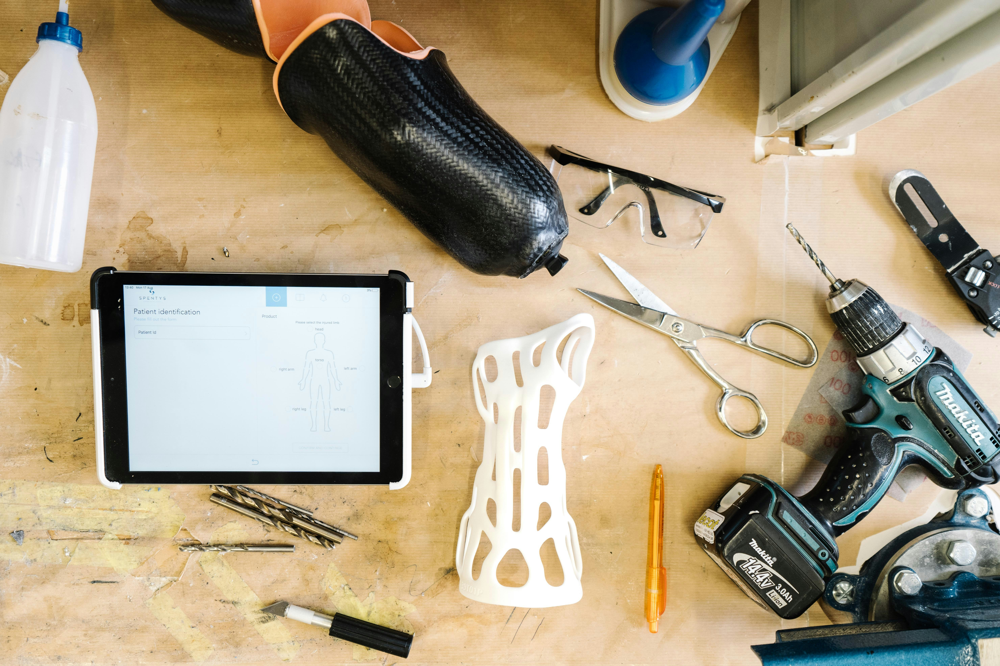
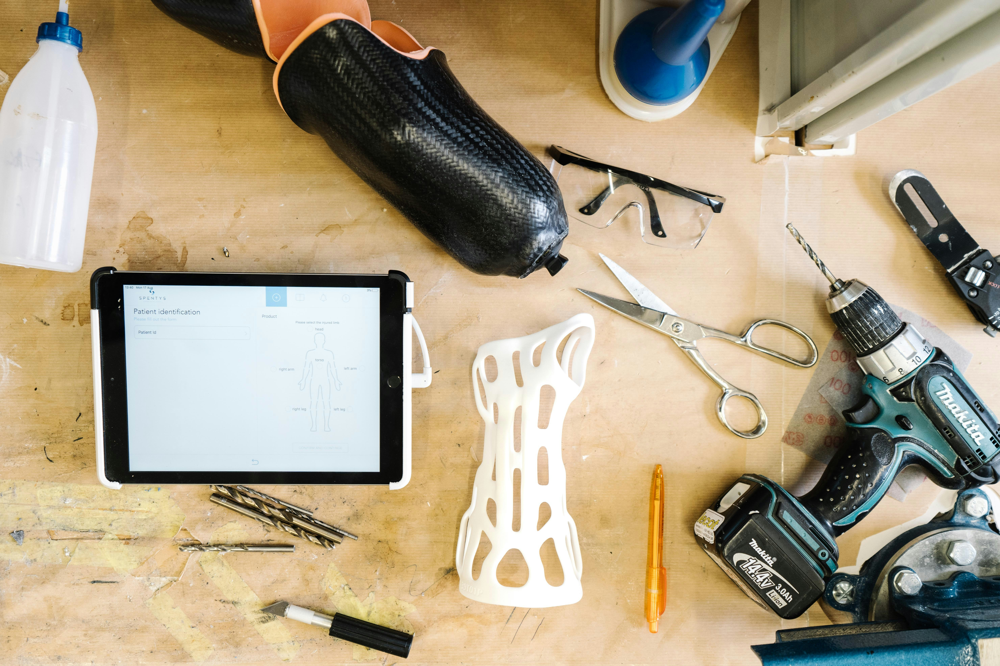

SUPER PRIMED
Medical Device Exports Worldwide
Medical Device Exports Worldwide
We offer a wide range of medical devices and equipment, all compliant with Global standards:


 

Contact us for a full catalog or custom requirements.
Request a Quote